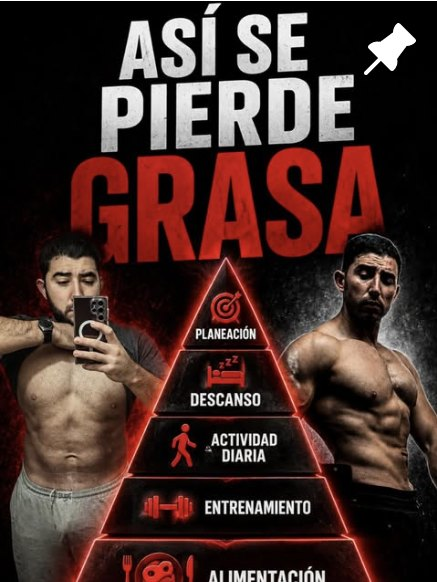

- 15 añosPesaba unos 60 kilos y no podía pagar un entrenador. Aprendí a contar macros con una libreta, una báscula y lo que había en casa: tortillas, frijoles, arroz, huevo, atún.
- Mis erroresCambiaba de rutina cada semana por YouTube, hacía abdomen diario y mi primera definición la hice sin carbohidratos, con faja y té de linaza. Fue un desastre. Por eso no te lo voy a pedir a ti.
- 2018Me contrataron de entrenador y lo primero que hice con mi sueldo fue pagarme una certificación. Después vinieron nutrición deportiva, hipertrofia y powerlifting [confirmar nombres].
- PowerliftingAprendí a medir todo: 2.º lugar en el selectivo estatal y 145 / 210 / 265 kg en banca, sentadilla y peso muerto.
- SPBVendí mi moto para pagar la renta de mi primer local. Hoy es SPB Center, en Coacalco.
- 2026Bajé de 93 a 81 kilos comiendo tortillas y con una comida libre a la semana. El mismo sistema que hago contigo.
 −10 kg
−10 kg −12 kg
−12 kg −16 kg
−16 kg −10 kg
−10 kg